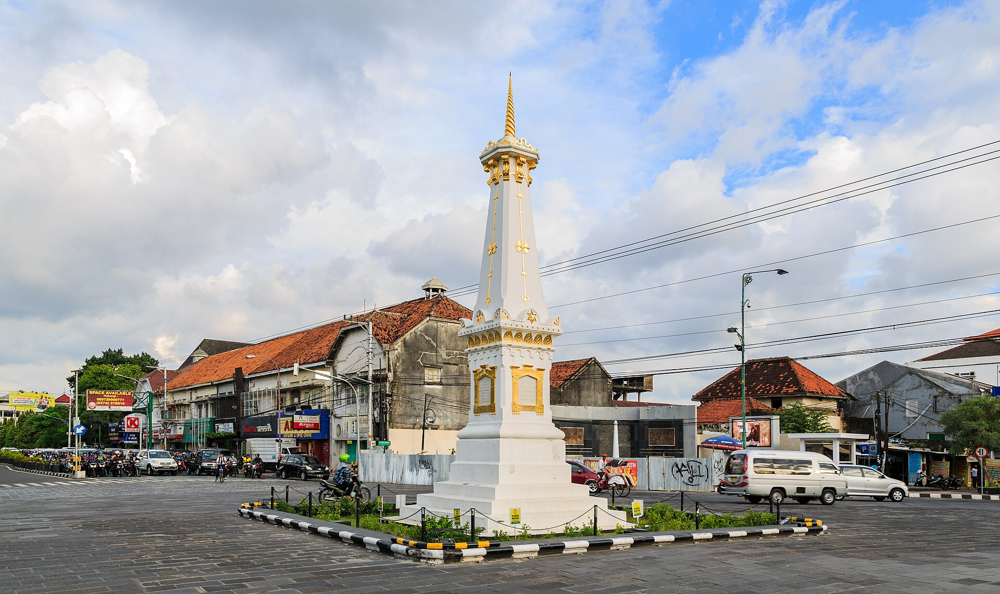
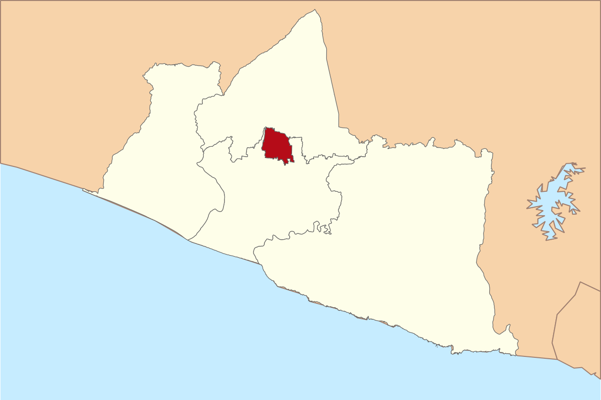
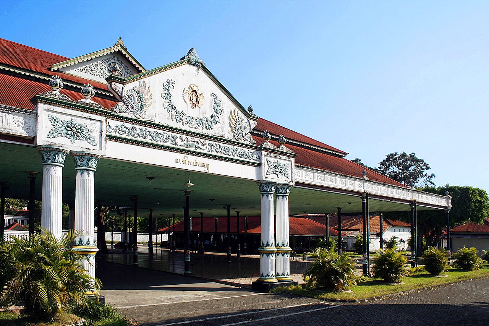
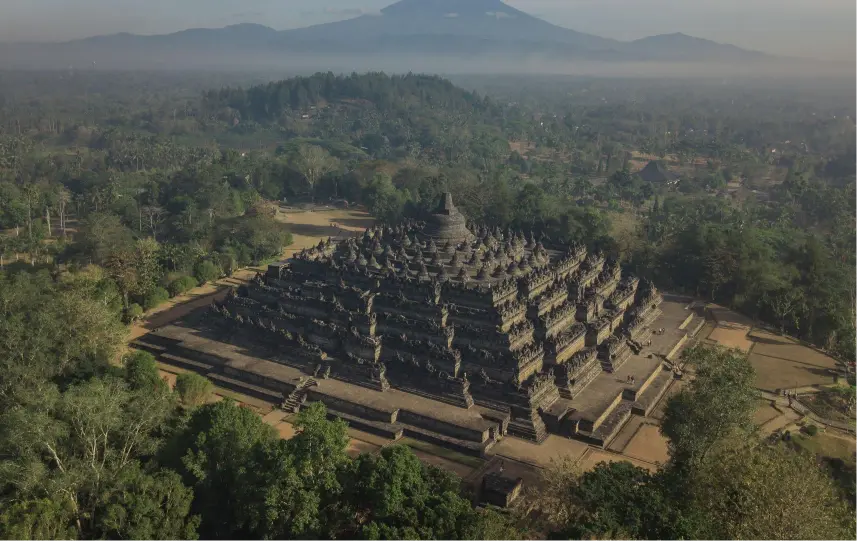

Sejarah

Nama Yogyakarta berasal dari gabungan dua kata dalam bahasa Sanskerta, yaitu "Ayodya" yang berarti "kedamaian tanpa perang" atau "kedamaian yang sempurna", dan "Karta" yang berarti "makmur". Jadi, Yogyakarta dapat diartikan sebagai "kota yang makmur dalam kedamaian". Nama ini diberikan oleh Sri Sultan Hamengkubuwono I, pendiri Kesultanan Ngayogyakarta Hadiningrat, sebagai penghormatan terhadap Ayodhya, kota kelahiran Sri Rama dalam epos Ramayana.
Secara historis, Yogyakarta merupakan pusat peradaban Jawa kuno dan memiliki peran penting dalam perjuangan kemerdekaan Indonesia. Kota ini pernah menjadi ibu kota Republik Indonesia pada masa Revolusi Nasional Indonesia, dari tahun 1946 hingga 1949.
Geografis

Kota Yogyakarta terletak di bagian tengah Provinsi Daerah Istimewa Yogyakarta, di Pulau Jawa. Secara geografis, kota ini berada pada ketinggian rata-rata 110 meter di atas permukaan laut. Wilayahnya cenderung datar, namun di bagian utara terdapat dataran tinggi yang berbatasan langsung dengan lereng Gunung Merapi.
Yogyakarta dialiri oleh beberapa sungai, antara lain Sungai Code dan Sungai Gajahwong, yang pada umumnya mengalir ke arah selatan menuju Samudra Hindia. Meskipun tidak memiliki masalah banjir separah daerah lain, beberapa area di sepanjang sungai ini tetap rentan terhadap luapan air saat musim hujan.
Wisata
Yogyakarta merupakan salah satu destinasi wisata paling populer di Indonesia, dikenal sebagai "Kota Budaya" dan "Kota Pelajar". Kota ini menawarkan perpaduan unik antara warisan budaya yang kaya, keindahan alam, dan kehidupan modern.
Kraton Yogyakarta Pagelaran

Sebagai ikon utama kota, Keraton Ngayogyakarta Hadiningrat adalah istana resmi Kesultanan Yogyakarta yang masih aktif. Bangunan megah ini tidak hanya berfungsi sebagai kediaman Sultan, tetapi juga sebagai pusat kebudayaan Jawa. Pengunjung dapat menjelajahi kompleks keraton, melihat koleksi benda-benda bersejarah, dan menyaksikan berbagai pertunjukan seni tradisional seperti tari dan gamelan.
Candi Borobudur

Meskipun secara administratif berada di Magelang, Jawa Tengah, Candi Borobudur seringkali menjadi tujuan wisata wajib bagi pengunjung Yogyakarta karena jaraknya yang relatif dekat. Candi Buddha terbesar di dunia ini merupakan Situs Warisan Dunia UNESCO yang memukau dengan relief-relief indahnya yang menceritakan kisah-kisah Buddha. Pengunjung dapat menikmati keindahan arsitektur kuno dan pemandangan matahari terbit yang spektakuler dari puncak candi.